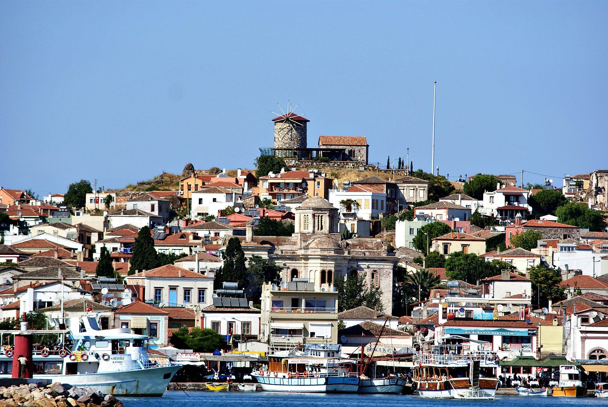
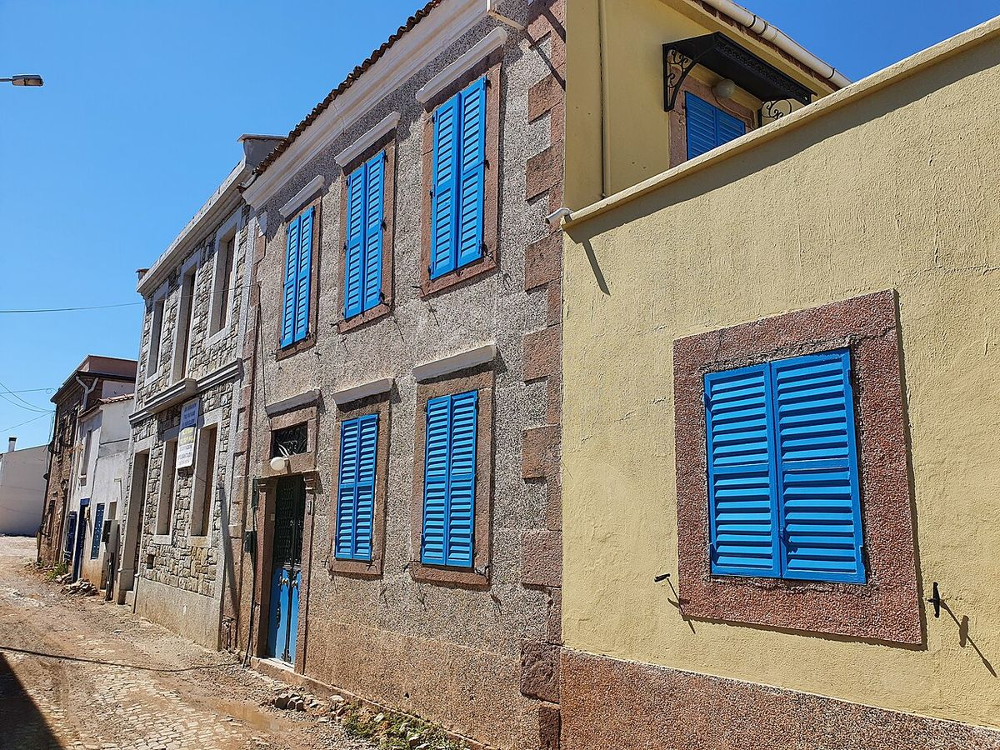
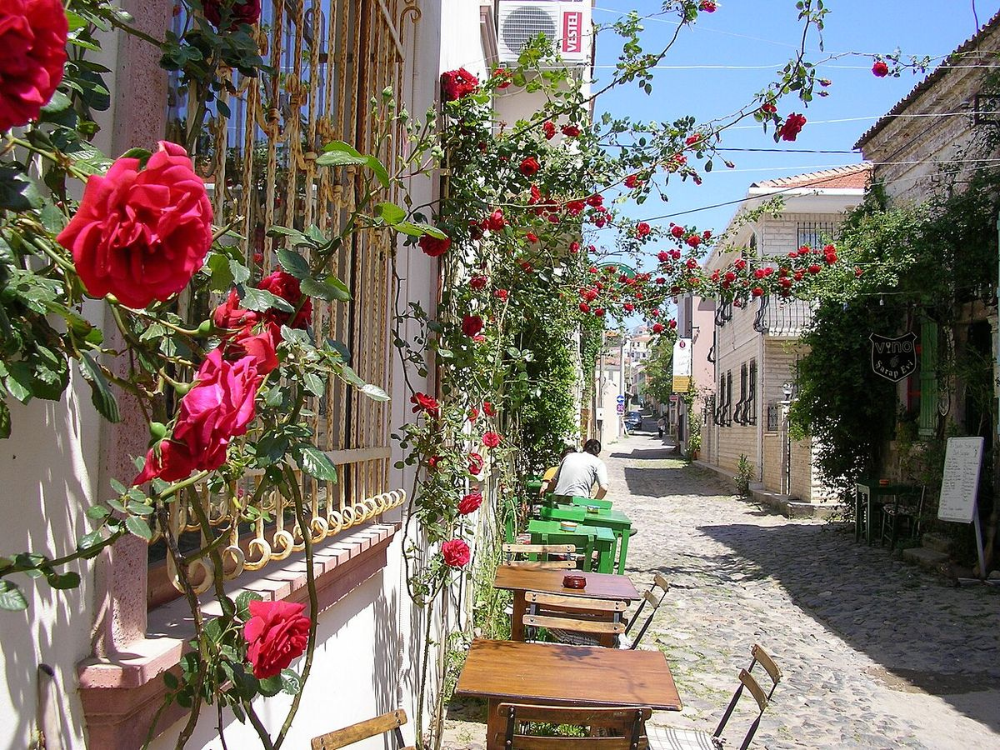
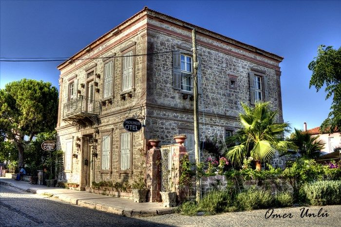

Cuma & Cumartesi · 21:00
Canlı Müzik Geceleri
Akustik, caz ve Ege ezgileri; yıldızların altında, rakı kadehleri eşliğinde.

Cunda Adası · Ayvalık
Taş fırından çıtır pizzalar, ev yapımı makarnalar ve Ege mezeleri. Cunda'nın en güzel manzarasıyla.
Hikâyemiz
Kardias, Cunda'nın eski Rum mahallesinin en tepesinde, 19. yüzyıldan kalma bir taş evde yaşıyor. Kalın duvarları, ahşap kepenkleri ve kemerli pencereleriyle bu ev; adanın balıkçılarını, zeytin tüccarlarını ve uzun yaz akşamlarını görmüş.
Biz de o akşamları geri getirmek istedik. Taş fırında her gün yoğrulan hamur, elde açılan makarnalar, Ayvalık'ın otları ve zeytinyağıyla hazırlanan mezeler… Hepsi, limana ve meydana bakan terasımızda, güneş denize inerken sofraya geliyor.
— Kardias ailesi


Bir Kardias akşamı
Saatler her gün Cunda'nın gerçek gün batımına göre hesaplanır.
İlk kadeh rakı ya da roze, yanında Ayvalık zeytinleri.
Güneş denize inerken soğuk mezeler ve Girit ezmesi sofrada.
Çıtır pizzalar, ev yapımı makarnalar ve günün balığı.
Süs ışıkları yanar; sakızlı dondurma ve Türk kahvesi.
Etkinlikler
Müzik, şarap ve kutlamalar için Cunda'nın en romantik sahnesi.
Akustik, caz ve Ege ezgileri; yıldızların altında, rakı kadehleri eşliğinde.

Urla, Bozcaada ve Şirince bağlarından şaraplar, şefin eşleştirme tabaklarıyla.

Çiçekler, mumlar, pasta ve size özel bir köşe; gerisini biz düşünürüz.

Şirket yemekleri, mezuniyetler ve kalabalık sofralar için özel menüler.
Galeri


Konaklama
Kardias aynı zamanda butik bir otel. Taş duvarlı, ahşap tavanlı odalarımız Cunda'nın sakin sabahlarına uyanmak için tasarlandı. Sabah kahvaltısı terasta, deniz manzarasıyla.
Misafirlerimiz
Rezervasyon
Teras masalarımız özellikle yaz akşamlarında erken doluyor. Formu doldurun, talebiniz WhatsApp üzerinden hazır mesaj olarak bize ulaşsın.
İletişim & Konum